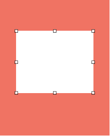
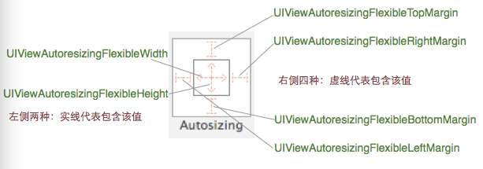

Autoresizing特性综述
当UIView的autoresizesSubviews是YES时,(默认是YES),那么在其中的子View会根据自身的autoresizingMask属性来自动适应自身和它superView之间的位置和大小。
autoresizingMask是一个枚举类型，此类型可以复选
typedef NS_OPTIONS(NSUInteger, UIViewAutoresizing) {
UIViewAutoresizingNone = 0,
UIViewAutoresizingFlexibleLeftMargin = 1 << 0,
UIViewAutoresizingFlexibleWidth = 1 << 1,
UIViewAutoresizingFlexibleRightMargin = 1 << 2,
UIViewAutoresizingFlexibleTopMargin = 1 << 3,
UIViewAutoresizingFlexibleHeight = 1 << 4,
UIViewAutoresizingFlexibleBottomMargin = 1 << 5
}；
这些项分别代表：
- UIViewAutoresizingNone view的frame不会随着superview的改变而改变
- UIViewAutoresizeingFlexibleLeftMargin 自动调整view与superview左边的距离保证右边距离不变
- UIViewAutoresizingFlexibleWidth 自动调整view的宽，保证与superview的左右边距都不变
- UIViewAutoresizingFlexibleRightMargin 自动调整view与superview右边的距离保证左边距离不变
- UIViewAutoresizingFlexibleTopMargin 自动调整view与superview顶部的距离保证底部距离不变
- UIViewAutoresizingFlexibleHeight 自动调整view的高，保证与superview的顶部和底部距离不变
- UIViewAutoresizingFlexibleBottomMargin 自动调整view与superview底部的距离保证顶部距离不变
autoresizingMask各个值的详细理解
举两个例子详细说明autoresizingMask用法，例如下图，红色view是白色view的superview,假设外部红色的view的高度为300,白色view距离superview的上下边距分别为40，60.白色view的高度为200.

1.当只设置UIView的autoresizingMask为UIViewAutoresizingFlexibleHeight时，如果红色view的高度变为400,那么白色view会保持距离红色view的上下边距不变，高度变成为300
2.如果设置UIView的autoresizingMask为UIViewAutoresizingFlexibleHeight|UIViewAutoresizingFlexibleTopMargin时，如果红色view的高度变为400,那么白色view会保持距离红色view的下边距不变，高度变成为200*(340/240),距离superview的上边距变为40*(340/240)
storyboard中对autoresizingMask的控制说明
storyboard中对autoresizingMask的控制如下图所示，可以通过点击那些虚线进行虚实线的切换，其中4个margin虚线才代表设置了该值，而width和height是实线代表设置了该值，不能想当然的理解。

总结
Autoreszing的最常见的实用场景：
1.比如我们想要设置tableView的frame，那我们只需要在初始化设置frame之后将tableView的autoresizingMask设置为 UIViewAutoresizingFlexibleWidth|UIViewAutoresizingFlexibleHeight 就行了。
2.我们想要一个view一直停留在其superview的最下方，那么我们在初始化设置frame之后只需要将autoresizingMask设置为UIViewAutoresizingFlexibleTopMargin 就可以了。
autorezingMask简单的一个属性，理解它之后可以让很多事情变得简单。